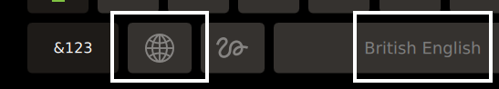
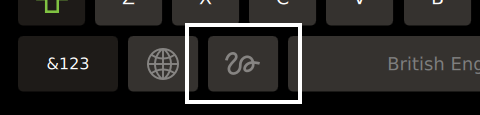
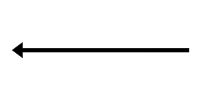
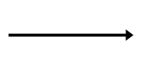
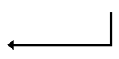
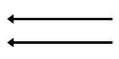
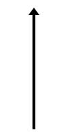
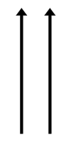

User Guide
This document explains how to interact with the virtual keyboard.
Opening the Keyboard
Once properly installed, the virtual keyboard can be opened by clicking on a text input field.
Language
The language can be changed by pressing the language key, which is illustrated with a "globe" icon:

The current language is displayed on the space bar key.
Handwriting
The handwriting mode can be activated by pressing the handwriting key:

Gestures
| Gesture | T9 Write | MyScript Text SDK | |
|---|---|---|---|
| Backspace |  | ||
| Space |  | ||
| Enter | Gesture not available |  | |
| Reset word |  | Gesture not available | Gesture not available |
| Toggle input mode |  | Gesture not available | Gesture not available |
| Toggle text case |  | Gesture not available | Gesture not available |